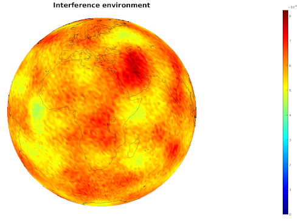

Next: February Controlling your passwords Up: Blog posts 2021 Previous: Blog posts 2021 Contents
The resulting process interpreted in geographical coordinates
is a Poisson point process on a sphere of radius  . The following code returns a scatter plot of Poisson points on the unit sphere.
. The following code returns a scatter plot of Poisson points on the unit sphere.
GNU Octave or Matlab:
%Plot random points on a unit sphere. Returns the points in a vector ref in cartesian coordinates
function refc = poissononsphere(density)
yMin = -1; yMax = 1;
xMin = -pi; xMax = pi;
xDelta = xMax - xMin; yDelta = yMax - yMin; %Rectangle dimensions
numbPoints = poissrnd(density); %Number of points in the area is a Poisson variable of intensity given as density
x = xDelta*(rand(numbPoints,1)) + xMin; %Pick points from uniform distribution
y = yDelta*(rand(numbPoints,1)) + yMin; %Map referencepoints to geographical coordinates
refs = [x'; asin(y)'];%Map geographical coordinates to Cartesian coordinates on a unit circle
r = 1;
refc = [r*sin(refs(2,:)+pi/2).*cos(refs(1,:)+pi);...
r*sin(refs(2,:)+pi/2).*sin(refs(1,:)+pi);...
r*cos(refs(2,:)+pi/2)];
figure(1) %Plot
[X, Y, Z] = sphere;
surf(X,Y,Z,'EdgeColor','none','FaceColor','black');
hold on
scatter3(refc(1,:),refc(2,:),refc(3,:),10,...
'MarkerFaceColor','yellow',...
'MarkerEdgeColor','red');
axis equal
end
Python:
import numpy as np import scipy.stats import matplotlib.pyplot as plt from mpl_toolkits.mplot3d import axes3d #Rectangle dimension xMin = -np.pi; xMax = np.pi; yMin = -1; yMax = 1; xDelta = xMax - xMin; yDelta = yMax - yMin; #rectangle dimensions #Density parameter of the Poisson point process. Mean number of points on the sphere lambda0=1000; #Simulate Poisson point process #Number of point in the area is a Poisson variable of intensity lambda0 numbPoints = scipy.stats.poisson( lambda0 ).rvs() x = xDelta*scipy.stats.uniform.rvs(0,1,((numbPoints,1)))+xMin y = yDelta*scipy.stats.uniform.rvs(0,1,((numbPoints,1)))+yMin #Transform to geographical coordinates x = x y = np.arcsin(y) #Plotting fig = plt.figure() ax = plt.axes(projection="3d") ax.scatter(np.sin(y+np.pi/2)*np.cos(x+np.pi),np.sin(y+np.pi/2)*np.sin(x+np.pi),np.cos(y+np.pi/2), color='r' ) plt.show()
Wolfram Language:
(*lambda is the mean number of points on the unit sphere*)
poissononsphere[lambda_] :=
Module[{nrofpoints, phi, theta, radius, refc, polarp},
nrofpoints = RandomVariate[PoissonDistribution[lambda]];
polarp =
Table[{RandomVariate[UniformDistribution[{-Pi, Pi}]],
ArcSin[RandomVariate[UniformDistribution[{-1, 1}]]]},
nrofpoints];
radius = 1;
refc =
Table[{radius*Sin[polarp[[i]][[2]] + Pi/2]*
Cos[polarp[[i]][[1]] + Pi],
radius*Sin[polarp[[i]][[2]] + Pi/2]*Sin[polarp[[i]][[1]] + Pi],
radius*Cos[polarp[[i]][[2]] + Pi/2]}, {i, nrofpoints}];
refc
];
ListPointPlot3D[poissononsphere[500], BoxRatios -> {1, 1, 1}]
|  |
References: